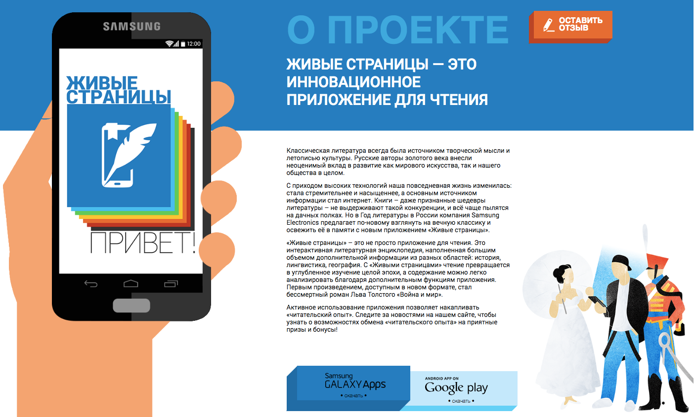
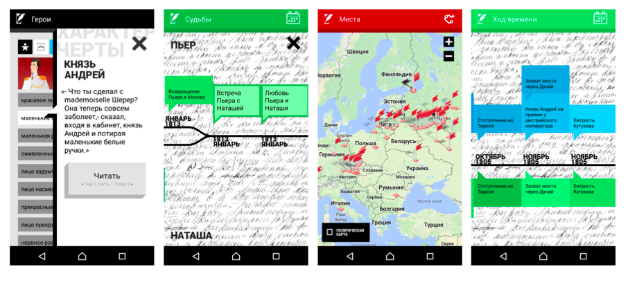
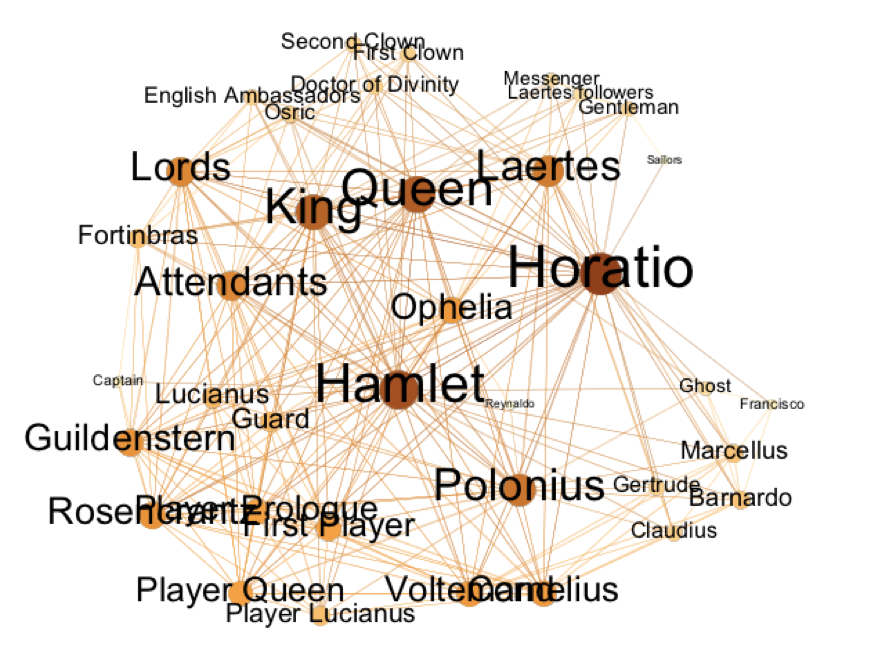
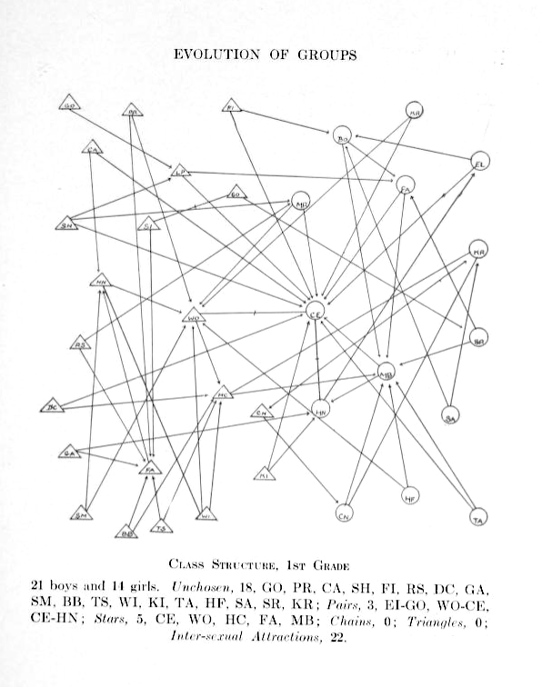
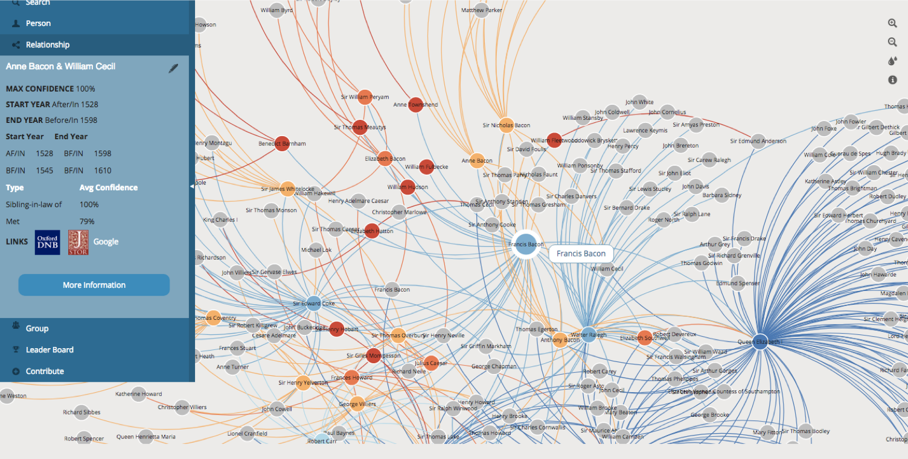
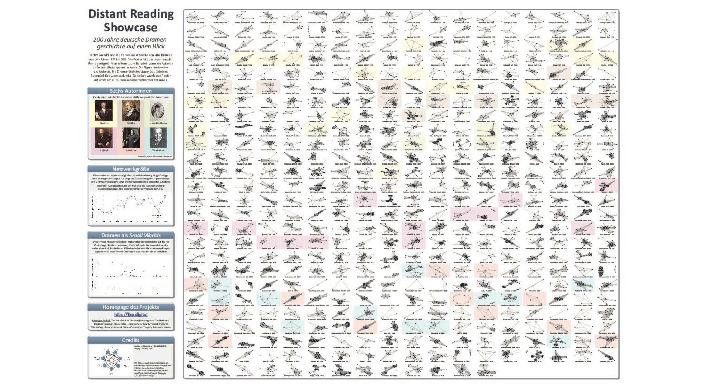
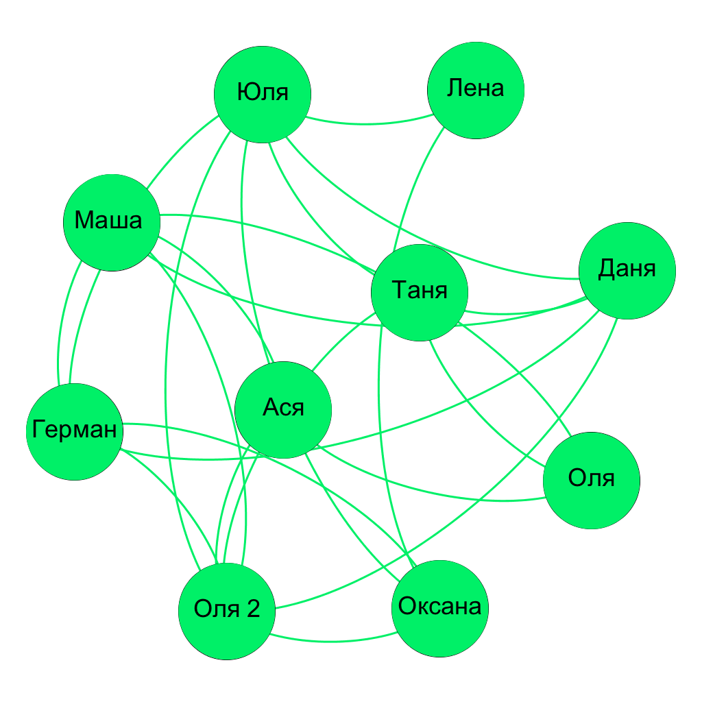
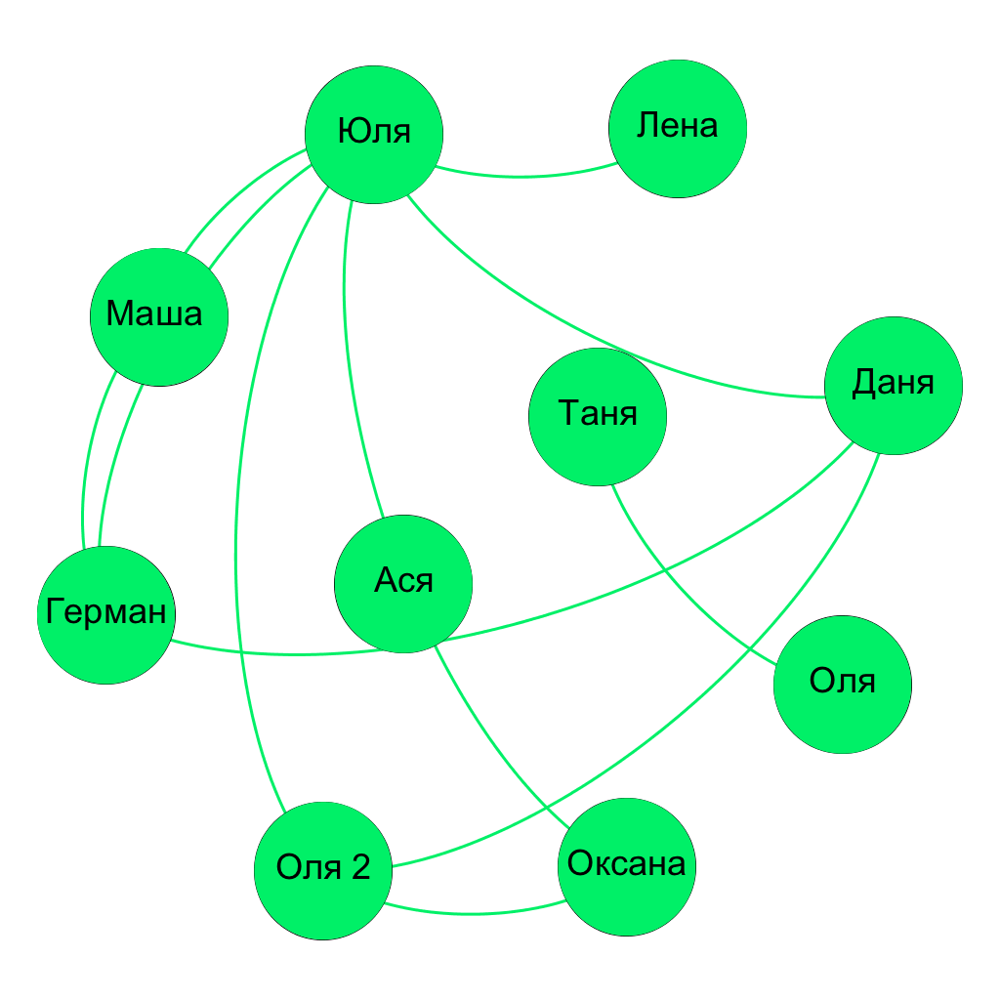
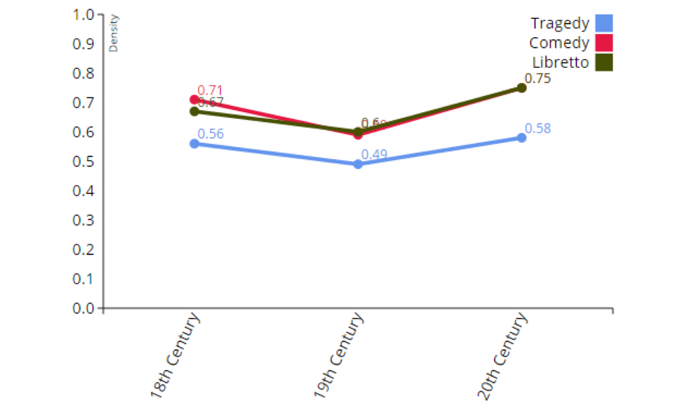
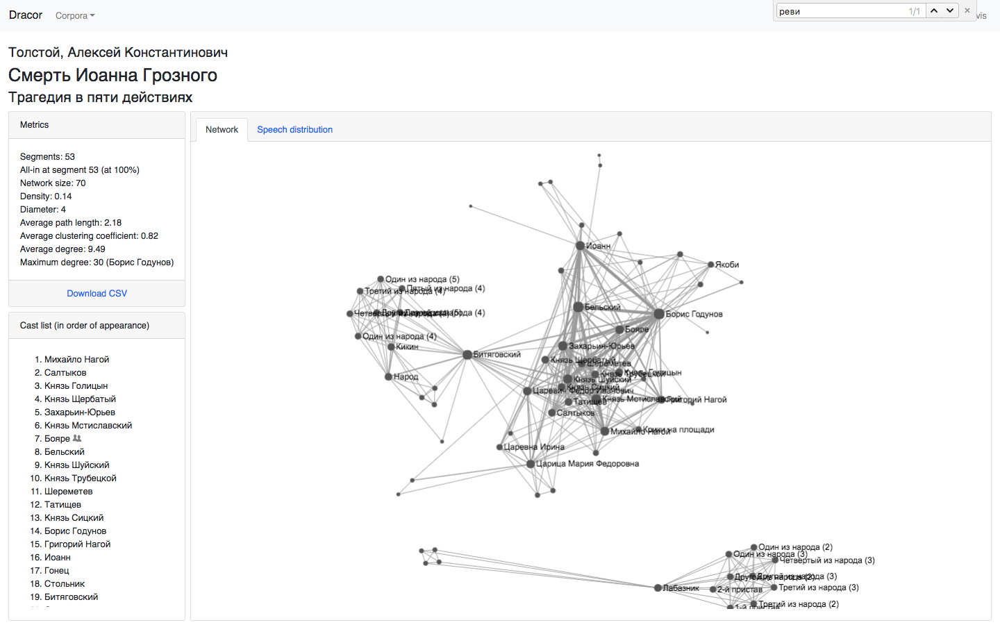

Digital humanities
не существует
кто я такой
- меня зовут Даня Скоринкин
- я из Вышки: hse.ru/staff/skorinkin
- по происхождению — компьютерный лингвист 💻
- по жизни — "программирующий гуманитарий" 💻📚🎭
- ...с филологическим уклоном ⚠️⚠️☣️☣️☣️
Что делают "программирующие гуманитарии"?
"Нелингвистические" корпусные исследования

"Нелингвистические" корпусные исследования

Цифровые издания
Пример: "Живые страницы"
Сетевой анализ в гуманитарных областях
Анализ социальных сетей

Социограммы Якоба Морено из книги Who Shall Survive: A New Approach to the Problem of Human Interrelations (1934)
обновленная версия на сайте Мартина Гражана (Martin Grandjean)
Сетевой анализ в гуманитарных науках
Сетевой анализ в филологии

Франко Моретти, «Теория сетей и анализ сюжета» (2011/2009)
Масштабирование
Можно смотреть динамику формальных метрик сети
Например, плотность
Плотности комедии и трагедии отличаются
Мы сделали русский материал для такого анализа:

RusDraCor
(Shiny RusDraCor)